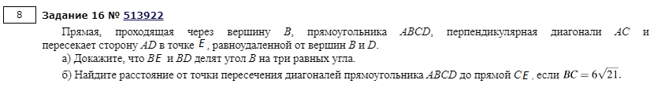
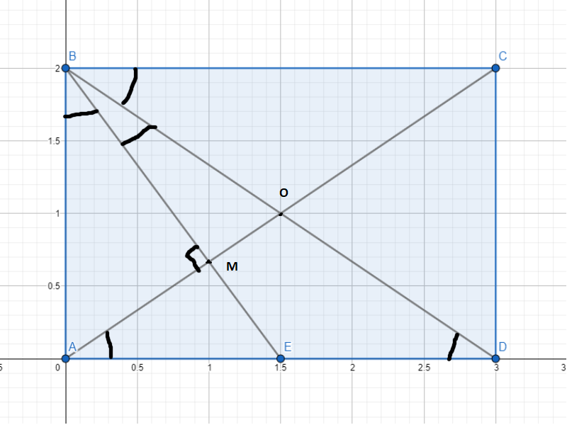
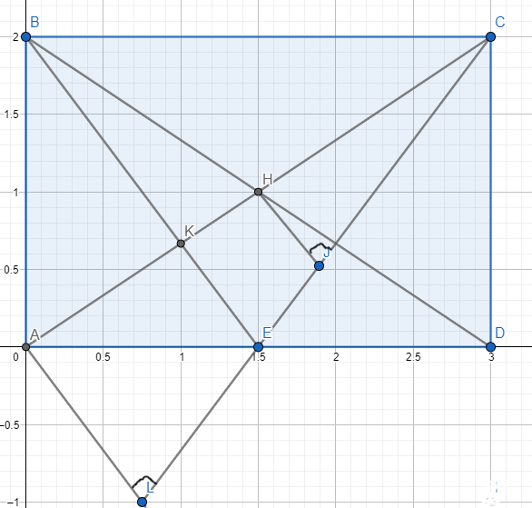

Подготовил Хаванский Константин
Условие

Пояснительный рисунок №1

1) Углы ∠ DBC и ∠ ADB равны как накрест лежащие.
В Δ BED равны стороны BE и BD по условию => углы ∠ EBD и ∠ ADB равны как углы при основании.
В Δ BМА ∠ ABM = 90° - ∠ BAC = ∠ CAD (т.к. ∠ BАD - прямоугольный) = ∠ BDA (как углы при диагоналях прямоугольника).
Таким образом, ∠ DBC, ∠ EBD, ∠ ABM равны ∠ ADB и соответственно равны между собой.
Доказано.
Пояснительный рисунок №2

2) Рассмотрим ΔALC и ΔHJC, где J и L - основания перпендикуляров из точек H и A на (CE) соответственно.
Эти треугольники подобны по трем углам(∠ALC - общий, ∠HJC = ∠ALC = 90°). Тогда HJ и AL относятся как HC и AC, т.е. \(\frac{2}{1}\), т.к. Н - середина диагонали АС.
Т.о. HJ= \(\frac{AL}{2}\) = \(\frac{S(ΔAEC)}{EC}\) из формулы площади ΔAEC.
\(S(ΔAEC) = 1/2 * CD * AE\).
Из пункта №1 мы знаем, что ∠ DBC = \(\frac{90°}{3}\) = 30°.
Т.о. \(CD = BC * tg(∠ DBC) = 6\sqrt{7}\)
Также \(∠ABE = \frac{90°}{3} = 30°\).
Т.о. \(AE = CD * tg(∠ ABE) = 2\sqrt{21}\).
\(EC = \sqrt{ED^2 + CD^2}\).
\(ED = BC - AE = 4\sqrt{21}\).
\(EC = \sqrt{16*21 + 36*7} = 14\sqrt{3}\).
Таким образом, HJ = \(\frac{AE * CD}{2 * EC}\) = \(\frac{42\sqrt{3}}{14\sqrt{3}}\) = 3.
Ответ: ρ(H; (CE)) = 3.